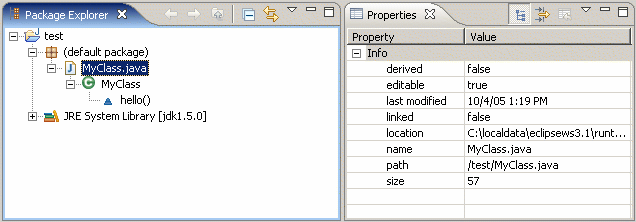
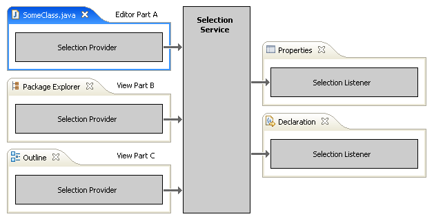
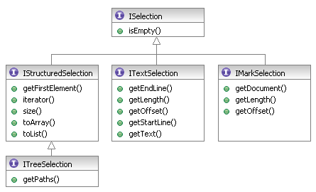
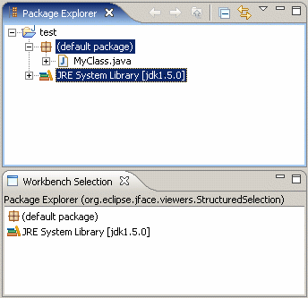
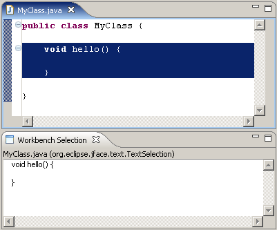

| Eclipse Corner Article |

Summary
The selection service provided by the Eclipse workbench allows efficient linking of different parts within the workbench window. Knowing and using the existing selection mechanisms gives your plug-ins a clean design, smoothly integrates them into the workbench and opens them for future extensions.By Marc R. Hoffmann, Mountainminds GmbH & Co. KG, hoffmann@mountainminds.com
April 14, 2006
The Eclipse workbench is a powerful UI framework for IDEs and also other applications. It provides many services for a highly integrated and extensible user interfaces. One of the integration aspects are view parts that provide additional information for particular objects and update their content automatically whenever such objects are selected somewhere in the workbench window. For example the "Properties" view behaves in this way: Wherever an element is selected in the workbench this view lists the properties of that element.
Other aspects of the workbench like the enablement of global actions may also depend on the current selection.
Instead of implementing "hard-wired communication" plug-ins can rely on the so called selection service. It decouples parts where items can be selected from others reacting on selection changes.
This article outlines the functionality and usage of the selection service. A provided sample plug-in demonstrates the workbench selection behaviour and can also serve for debugging purposes.
Each workbench window has its own selection service instance. The service keeps track of the selection in the currently active part and propagates selection changes to all registered listeners. Such selection events occur when the selection in the current part is changed or when a different part is activated. Both can be triggered by user interaction or programmatically.
The view where elements or text is selected does not need to know who is interested in the selection. Therefore we may create new views that depend on the selection of an existing view – without changing a single line of code in that view.
The next sections explain who provides what kind of selections to whom.
From the users point of view a selection is a set of highlighted entries in a viewer like a table or tree widget. A selection can also be a piece of text in an editor. Behind the scene each visual element in the workbench is represented by a Java object. The MVC implementation of JFace maps between the domain model objects and the visual representations.
Internally a selection is a data structure holding the model objects which corresponds to the graphical elements selected in the workbench. As pointed out before there are two fundamental different kinds of selections:
Both can be empty, i.e. a empty list or a text string with zero length. Following the typical Eclipse philosophy these data structures are properly defined by interfaces:

The
IStructuredSelection
refers to a set of objects;
ITextSelection
and
IMarkSelection
describe a piece of selected text.
For convenience there are default implementations for these interfaces:
org.eclipse.jface.viewers.StructuredSelectionorg.eclipse.jface.text.TextSelectionorg.eclipse.jface.text.MarkSelection
These implementations are used internally within the viewer when transforming
low-level SWT events to
ISelection
objects. The implementations are also useful when elements should be selected
programmatically by some application code, for example:
ISelection sel = new StructuredSelection(presetElement);
treeviewer.setSelection(sel);
Install the provided sample plug-in and check what kind of selections occur in different views. The "Workbench Selection" view shows the
ISelectionimplementation class and the selected elements or text itself.
All JFace viewers are so called selection providers. A selection
provider implements the interface
ISelectionProvider:
The different JFace viewers use and propagate different kind of selections:
| Viewer | Selection Type |
ComboViewer |
IStructuredSelection |
ListViewer |
IStructuredSelection |
TreeViewer |
IStructuredSelection |
+- CheckboxTreeViewer |
IStructuredSelection |
TableViewer |
IStructuredSelection |
+- CheckboxTableViewer |
IStructuredSelection |
TextViewer |
ITextSelection,
IMarkSelection |
+- SourceViewer |
ITextSelection,
IMarkSelection |
+- ProjectionViewer |
ITextSelection,
IMarkSelection |
Also custom viewers may serve as selection providers and implement the
ISelectionProvider
interface.
Any workbench part that holds a viewer should register this viewer as the selection provider with the respective view site:
getSite().setSelectionProvider(tableviewer);
Even if you don't see a need for propagating your selection right now, this opens your plug-in for future extensions by you or by other plug-in implementers. If your view defines actions that depend on the current selection, setting a selection provider is also necessary to allow dynamic enablement of these actions.
Use the sample plug-in to check whether your views properly register selection providers.
The workbench window is typically assembled in many parts, each coming with at least one viewer. The workbench keeps track about the currently selected part in the window and the selection within this part. Here starts the interesting part of the story: Plug-in implementations can access this information or register for notifications on selection changes.
Each workbench window has an
ISelectionService implementation
which allows tracking the current selection. A view part can obtain a
reference to it through its site:
getSite().getWorkbenchWindow().getSelectionService()
The selection service knows the current selection of the active part or of a part with a particular id:
ISelection getSelection()
ISelection getSelection(String partId)
Typically views react on selection changes in the workbench window. In this
case they better register an
ISelectionListener
to get notified when the window's current selection changes:
void addSelectionListener(ISelectionListener listener)
void removeSelectionListener(ISelectionListener listener)
Listeners registered in this way are notified when the selection in the active part is changed or when a different part is activated. Only selections within the active part are propagated. If the application is only interested in the selection of a particular part (independently of its actual activation) one may register the listener only for the respective part id:
void addSelectionListener(String partId, ISelectionListener listener)
void removeSelectionListener(String partId, ISelectionListener listener)
This works even if there is currently no part with such a id. As soon as the
part is created its initial selection will be propagated to the listeners
registered for it. When the part is disposed, the listener is passed a
null selection if the listener implements
INullSelectionListener
(see section below).
The
ISelectionListener
is a simple interface with just one method. A typical implementation
looks like this:
private ISelectionListener mylistener = new ISelectionListener() {
public void selectionChanged(IWorkbenchPart sourcepart, ISelection selection) {
 if (sourcepart != MyView.this &&
if (sourcepart != MyView.this &&
 selection instanceof IStructuredSelection) {
selection instanceof IStructuredSelection) {
 doSomething(((IStructuredSelection) selection).toList());
}
}
};
doSomething(((IStructuredSelection) selection).toList());
}
}
};
Depending on your requirements your listener implementation probably needs to deal with the following issues as shown in the code snippet above:
ISelectionListenerinterface up withISelectionChangedListenerused by JFace viewers to notify about selection changes.
Don't forget to remove your selection listener when you can't handle events
any more, e.g. when your view has been closed. The dispose()
method is a good place to
 remove your
listener:
remove your
listener:
public void dispose() {
ISelectionService s = getSite().getWorkbenchWindow().getSelectionService();
s.removeSelectionListener(mylistener);
super.dispose();
}
Up to now we focused on the core functionality of the selection service, which covers most of the use cases. There are additional issues that might come into picture in implementation projects.
When navigating views the selection changes frequently - especially when the keyboard is used to scroll through long lists or the mouse is dragged over some text. This will lead to many unnecessary updates of the viewers registered as listeners to the selection service and may make your application less responsive.
So called post selection events will be send-out with a slight delay. All intermediate
selections during the delay time are ignored; just the final selection is propagated.
The ISelectionService has additional methods to register listeners for the
delayed selection events:
void addPostSelectionListener(ISelectionListener listener)
void removePostSelectionListener(ISelectionListener listener)
void addPostSelectionListener(String partId,
ISelectionListener listener)
void removePostSelectionListener(String partId,
ISelectionListener listener)
To avoid performance issues viewers should typically register selection listeners this way.
The selection providers are responsible for sending out the delayed events and have to
implement the IPostSelectionProvider interface if they support it – all
JFace viewers do so.
The call-back method selectionChanged() defined in
ISelectionListener
get the new selection as well as the originating part passed in as parameters:
public void selectionChanged(IWorkbenchPart part, ISelection selection);
The
INullSelectionListener
interface extends
ISelectionListener
but does not declare any additional methods. It is a pure marker interface to
indicate that implementers of the selectionChanged() method wants
to bet notified even with null parameters. This is usefull when
you need to know that there is no current selection simply due to the fact
that there is no one who provides a selection. You step into this when:
If you study the workbench API carefully you will find out that there
are two selection services: The
IWorkbenchPage
is a
ISelectionService.
On the other hand the
IWorkbenchWindow
has a method getSelectionService(). Therefore e.g. registering
a listener within a part implementation is possible in two ways:
getSite().getWorkbenchWindow().getSelectionService().addSelectionListener(l);
or
getSite().getPage().addSelectionListener(l);
Actually this is totally equivalent because since Eclipse 2.0 a workbench window is limited to a single page only. Just don't mix both selection services when adding and removing a listener as two different implementations sit behind it.
Be aware that the part's site accepts a single selection provider only,
which should be registered within the createPartControl()
method only:
getSite().setSelectionProvider(provider);
Replacing the selection provider during the lifetime of the part is not
properly supported by the workbench. If a part contains multiple viewers
providing selections, like the "Java Hierarchy" view does, a intermediate
ISelectionProvider
implementation has to be provided that allows dynamically delegating to the
currently active viewer within the part. As a starting point you may look into
SelectionProviderIntermediate.java
provided with this article.
This article claims that the selection service helps to decouple views reacting on each others selection. But the view handling a selection still needs to deal with the selected objects to provide any useful functionality. Check out the adapter pattern provided by the Eclipse runtime core, which allows attaching new functionality to existing model objects or the other way round providing required functionality for newly contributed objects.
Actually our example plug-in does exactly this by using the workbench label
provider which in turn relies on the
IWorkbenchAdapter
to retrieve icons and text labels for the listed objects. The same mechanism
is utilized by the "Properties" view, see article
"Take control of your properties"
for details.
This article comes with a small example plug-in that demonstrates the explained techniques. Additionally the plug-in may serve for debugging your selection providers. The example contributes a new view "Workbench Selection" which simply mirrors the current selection in the workbench. It works for element selections as well as for text selections.
Download the plug-in project
com.mountainminds.eclipse.selectionsample.zip
and import it into your workspace via the "Import..." wizard from the
"File" menu. Select "Existing Project into Workspace" on the
first wizard page. On the second page simply use the option
"Select archive file" to import the downloaded archive.
The fastest way to launch the example is right-clicking the plug-in project and select "Run As" → "Eclipse Application" in the context menu. From the menu of the launched workbench activate "Window" → "Show View" → "Other..." and select our view "Workbench Selection" in the category "Other".
Now you can play around with selections in various workbench parts and see how our "Workbench Selection" view reflects these selections:
The same works for text selections:

The example is implemented in a single class
SelectionView.java applying the
techniques discussed in this article. When reading through this short piece
of code you may note that:
ISelectionListener
implementation makes sure that we do not react on our own selections.
ISelection
is shown in the view description (the optional grey bar at the top).
PageBook.
The mechanisms provided by the Eclipse workbench are simple to use and powerful. Not using this mechanisms result in plug-ins that poorly integrate with the rest of the workbench and will be hard to extend. To avoid such pitfalls simply follow these rules when selections come into picture:
ISelectionService.
To discuss or report problems in this article see bug 112193.
This article come with the following resources: